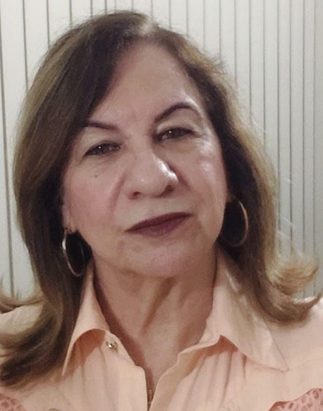

Vídeo - Aulas
Seja bem-vindo à nossa sessão de vídeo aulas de Biologia, desenvolvida especialmente para quem está se preparando para o vestibular! Aqui, vamos explorar os principais conceitos, teorias e descobertas essenciais para a compreensão da vida e dos processos biológicos. Nossas entrevistas e aulas foram pensadas para facilitar o seu aprendizado, com conteúdos claros e bem estruturados, que vão te ajudar a conectar a teoria biológica com o mundo ao seu redor. Prepare-se para aprofundar seus conhecimentos e garantir uma excelente preparação para o vestibular!
Professora Eva
Professora Eva Maria J. Barros é formada em Ciências Físicas e Biológicas, Matemática e Química pelas instituições: Faculdades Hebraico Renascença (São Paulo), Universidade de Guarulhos (UNG) e Universidade de Iguaçu (RJ). Lecionou 25 anos no ensino privado, escolas técnicas, estaduais da cidade de São Paulo e 6 anos na cidade de Valinhos.
"Gratidão à Deus pelo amor, vida e direção, gratidão pelo aprendizado com grandes mestres, gratidão por ter encontrado em meus alunos a razão e a recompensa do conhecimento. Orgulho de ser professora."
Entrevista 01
Nesta entrevista é abordada estratégias para equilibrar os estudos com outras atividades diárias, como trabalho, lazer e cuidados pessoais. A professora Eva destaca dicas de gestão de tempo, organização, foco e como evitar sobrecarga, mantendo uma rotina produtiva e saudável. Este tipo de orientação é essencial para quem busca otimizar o aprendizado sem comprometer o bem-estar.
Entrevista 02
A professora Eva explica conteúdo sobre os métodos e abordagens para estudar biologia de forma eficaz. A entrevista explica aspectos como a importância de entender os conceitos fundamentais, como células, genética e ecologia, além de estratégias de aprendizado como a utilização de diagramas, revisões periódicas e a prática de exercícios. O objetivo é ajudar os estudantes a organizar seus estudos e a dominar os tópicos essenciais dessa disciplina científica.
Entrevista 03
A entrevista destaca os temas de biologia mais frequentes nos vestibulares, como ecologia, genética, evolução e fisiologia, trazendo dicas práticas de estudo e estratégias para resolver questões. O foco é orientar os alunos a priorizar os temas que mais aparecem, aumentando suas chances de sucesso nas provas.
Aula 01
A vídeo aula "Introdução à Genética", ministrada pelo professor Paulo Jubilut, é uma explanação essencial sobre os conceitos fundamentais dessa área da Biologia. Com o auxílio de computação gráfica, o professor explica de forma clara e visual os conceitos de dominância, recessividade, genótipo, fenótipo, homozigose e heterozigose. Ele detalha como esses conceitos estão relacionados à hereditariedade e como influenciam a expressão das características nos seres vivos. A aula é uma introdução importante para quem deseja entender os princípios básicos da genética e suas aplicações.
Aula 02
Neste vídeo, o professor Paulo Jubilut aborda as três doenças que mais costumam ser cobradas no ENEM: Doença de Chagas, Esquistossomose e Dengue. Com uma explicação detalhada e acessível, o professor explica as características de cada uma dessas doenças, seus agentes causadores, formas de transmissão, sintomas e medidas de prevenção. Através de exemplos e informações relevantes, a vídeo aula proporciona um entendimento claro sobre o impacto dessas doenças na saúde pública, além de fornecer uma base sólida para os estudantes que se preparam para o exame.
Aula 03
O professor Paulo Jubilut faz uma revisão sobre temas importantes da Biologia, frequentemente cobrados no ENEM, como Células-Tronco, Clonagem, Organismos Transgênicos e Teste de DNA. A aula explica, de forma acessível, os conceitos básicos de cada um desses tópicos, abordando suas implicações científicas, éticas e sociais. O professor detalha o funcionamento das células-tronco, as diferentes formas de clonagem, a produção e os usos de organismos transgênicos, além de esclarecer como os testes de DNA são realizados e suas aplicações. A vídeo aula oferece um resumo completo desses temas, preparando os estudantes para as questões do ENEM e outros vestibulares.